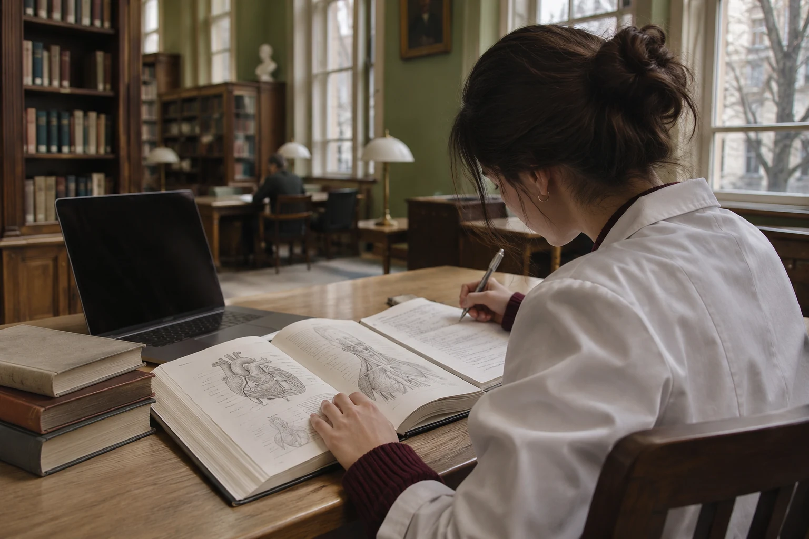
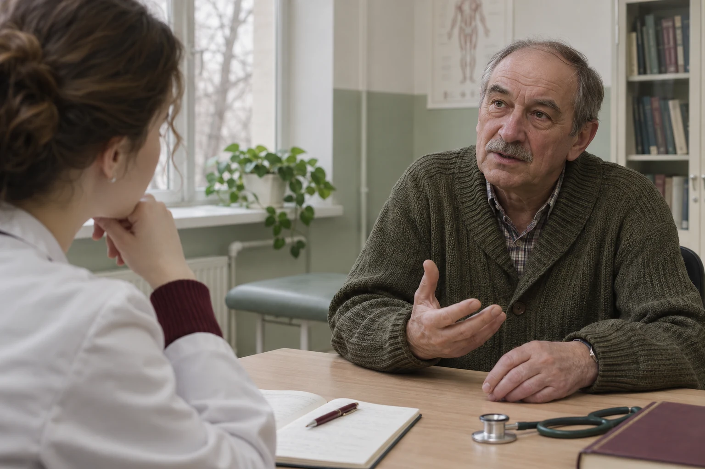

Найти опору
в источниках
Поиск по медицинским документам с переходом к конкретному фрагменту, его контексту и версии.
Исследовательское направлениеМедицина. Образование. Исследование.
Создаём среду, в которой можно изучать медицину, находить ответы в источниках и учиться общаться с пациентом.
Проект в разработке. Сейчас доступен кликабельный макет станции.

Между прочитанной рекомендацией и разговором на приёме — целый путь. Мы хотим соединить его в одной образовательной среде.
Поиск по медицинским документам с переходом к конкретному фрагменту, его контексту и версии.
Исследовательское направлениеУчебные задачи, в которых важно связать симптомы, задать вопросы и обосновать своё решение.
Планируемая возможностьВиртуальный пациент, сбор анамнеза и разбор выполненных действий по критериям станции.
Первый сценарийНачинаем со студентов 5–6 курсов.
Дальше — сценарии для ординаторов, врачей и преподавателей.
Поздороваться. Услышать жалобу. Уточнить детали. Не потерять важное за следующим вопросом.
Первым разрабатываем станцию сбора жалоб и анамнеза. Студент ведёт разговор, пациент отвечает в рамках карточки случая, а после приёма можно разобрать свои действия.
Пройти макет станцииВ макете ответы пока шаблонные.
Языковая модель ещё не подключена.
Первый приём у терапевта
Здравствуйте. Что вас беспокоит?
Голова в последнее время болит. Особенно по утрам.
Действия видны в контексте разговора
Фрагмент для знакомства с механикой. Критерии полного тренажёра предстоит проверить с врачами.
После приёма
Вы начали с открытого вопроса и дали пациентке описать жалобу своими словами.
Уточните начало и характер симптомов. Затем переходите к остальному анамнезу, сохраняя структуру разговора.
Это заранее написанный пример обратной связи, а не автоматическая медицинская оценка.
Исследуем, как находить нужные положения в русскоязычных медицинских документах и сохранять их смысл в ответе.
В основе — RAG: сначала поиск по подготовленным источникам, затем объяснение с опорой на найденное.
Заголовки, таблицы, условия применения и версия рекомендации.
Сопоставить вопрос с точным фрагментом, синонимами и сокращениями.
Установить, подтверждает ли найденный текст утверждения ответа.
[2] Наличие ссылки ещё не доказывает достоверность. Поэтому поиск, подтверждённость ответа и его качество будем оценивать отдельно — с участием медицинских специалистов.
На что мы опираемсяМедозор — инициативная разработка. Сейчас важнее собрать работающий учебный сценарий и проверить его с людьми.

Кликабельная станция, схема карточки пациента, один черновик случая и первые интервью со студентами и преподавателями.
Подключить языковую модель, сохранять состояние диалога, проверить первые сценарии и критерии оценки с врачом.
Выбрать ограниченный набор документов и сравнить способы поиска. Измерить ошибки и проверить прототип с пользователями.
Можно пройти кликабельный макет станции и познакомиться с механикой. Ответы в нём шаблонные. Языковая модель, медицинский RAG и полноценная платформа ещё разрабатываются.
Рассматриваем клинические рекомендации Минздрава России и открытые клинические случаи с подходящей лицензией. Состав базы ещё предстоит определить. Для источников важно сохранять версию, дату и условия применения.
Факты хранятся в карточке конкретного случая. Модель должна играть пациента в её пределах: отвечать на вопросы, помнить ход диалога и раскрывать сведения по правилам сценария. Перед публикацией карточку должен проверить врач.
Тренажёр предназначен для обучения. Автоматическую диагностику и назначение лечения на текущем этапе не предусматриваем. Поиск задуман с возможностью перейти к первоисточнику и самостоятельно оценить применимость информации.
Собираем проект вместе
Студент, преподаватель или врач?
Ваш опыт поможет сделать первые сценарии полезнее.